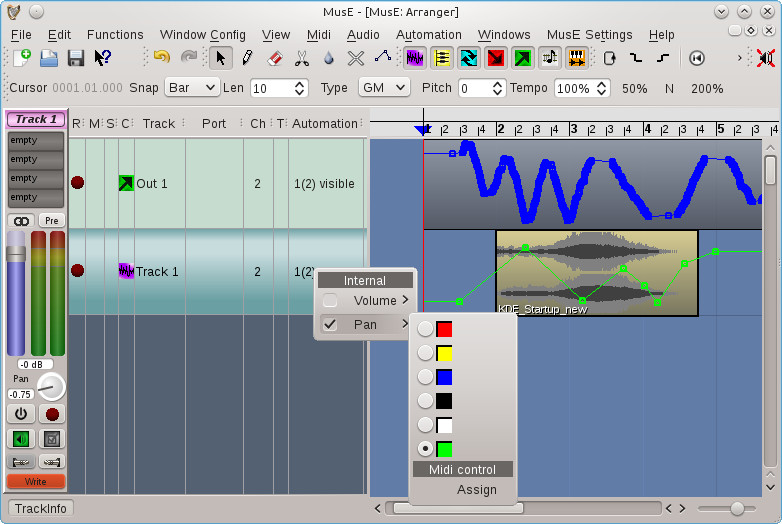
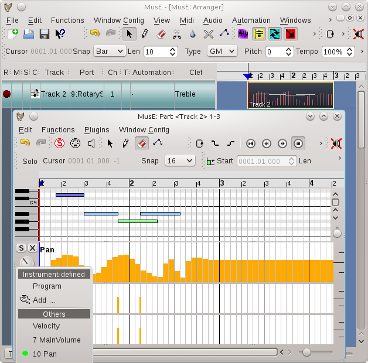

Automatización
La automatización es la capacidad de grabar (o construir) y reproducir secuencias exactas de movimientos de control.
MusE puede automatizar tanto MIDI como audio, pero se manejan de manera algo diferente aunque comparten una serie de similitudes.
Automatización de audio
Casi todos los controles gráficos de audio en MusE se pueden automatizar. Esto incluye el volumen y el balance de una pista de audio, y los controles de cualquier complemento en el rack de efectos. Y si la pista es una pista de sintetizador, todos los controles del sintetizador.
Cada control tiene un valor de ajuste manual. Este valor se muestra cuando no hay ningún dato de automatización o se ha desactivado la automatización.
Para los controles de complementos y sintetizadores, generalmente es más deseable manipular la automatización con las GUI de complementos genéricos, porque MusE tiene control total sobre su comportamiento. (Consulte las GUI de complementos).
Hay algunas formas de ingresar datos de automatización de audio:
- Ajustando los controles de audio mientras el transporte está rodando. MusE registrará los movimientos exactos.
- Ajustando los controles de audio mientras el transporte está parado, en diferentes posiciones de transporte. El modo TOUCH permite esto.
- Haciendo clic con el botón derecho en cualquier control de audio y eligiendo una operación en el menú emergente de automatización. Esto incluye almacenar, borrar y borrar eventos de automatización y buscar el evento anterior o siguiente.
- Dibujando los datos en los gráficos de automatización de la pista de audio (ver pistas).
Modos de automatización de audio
Cada banda de pista de audio tiene un botón de modo de automatización en la parte inferior.
Hay cuatro modos de automatización:
- OFF (apagado): Desactiva toda la automatización, utiliza siempre el valor manual.
- READ (leer): Los datos de automatización se aplican a los controles. Si existe algún dato de automatización, el valor manual es anulado y no tiene ningún efecto.
- TOUCH (tocar): Le permite alterar un control en cualquier momento, mientras el transporte está parado o rodando, si está rodando, cuando el control se libera, vuelve a la lectura de los datos de automatización.
- WRITE (escritura): Permite ajustar un valor inicial antes de enrollar el transporte. Mientras rueda, cuando el control está liberado, no vuelve a leer los datos de automatización.
Aquí hay una captura de pantalla del modo ESCRITURA de automatización y algunos datos de automatización, con el menú emergente de automatización del panel de pistas a la vista (ver pistas):

Automatización midi
La automatización MIDI es un concepto ligeramente diferente: a diferencia de la automatización de audio, actualmente no existe ‘modo’ de automatización y no registra movimientos de control gráfico. Los datos se ven desde los editores de pianoroll y percusión, haciendo clic en el botón ‘Ctrl’ en esas secciones.
De manera similar a los controles de audio, cada control midi tiene un valor de ajuste manual. Este valor es sobreescrito cuando hay datos de automatización midi.
Hay varias formas de introducir datos de automatización MIDI:
- Ajustando controles MIDI externos (como el tono del teclado midi o la rueda de modulación) mientras el transporte está rodando y tanto el transporte como la pista midi están en modo de grabación. MusE registrará los movimientos exactos. Como se mencionó anteriormente, tenga en cuenta que los movimientos de control gráfico no se registran.
- Haciendo clic derecho en cualquier control midi y eligiendo una operación en el menú emergente de automatización. Esto incluye almacenar y borrar eventos de automatización.
- Dibujando los datos en los gráficos de automatización de una parte midi.
Aquí hay una captura de pantalla de una pista midi, que contiene una parte midi que se ha abierto con el editor de pianoroll y mostrando los datos de automatización.
El menú emergente ‘Ctrl’ (abajo a la izquierda) muestra los controladores midi disponibles. El punto verde indica que hay algunos datos.
